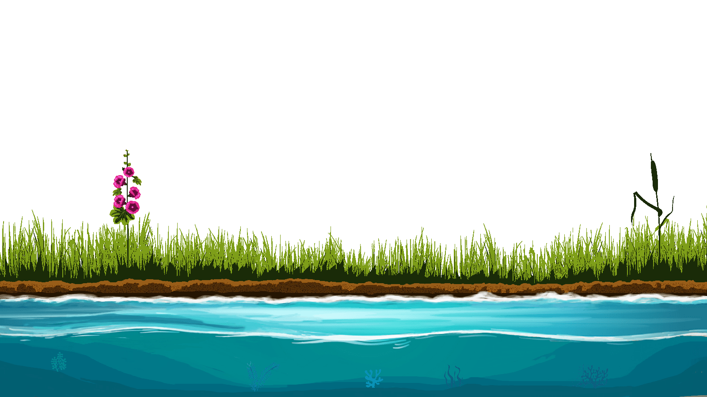
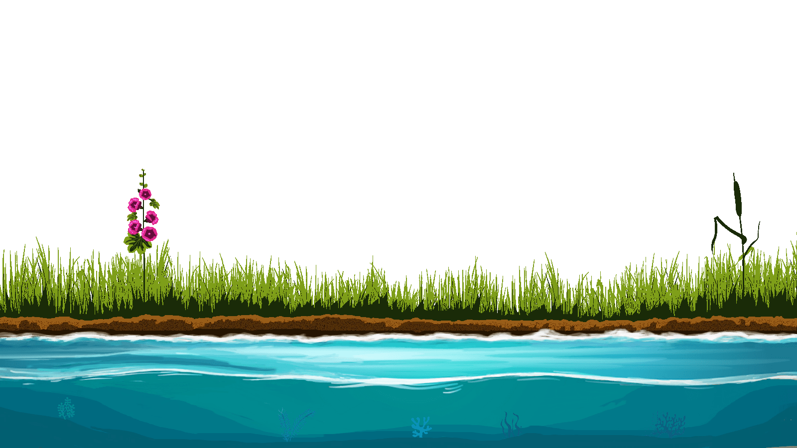
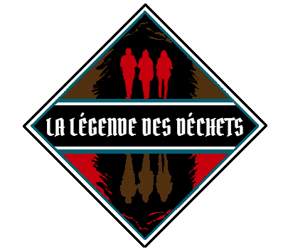
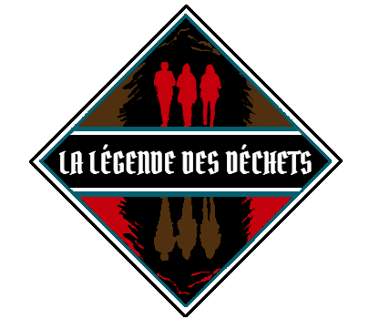
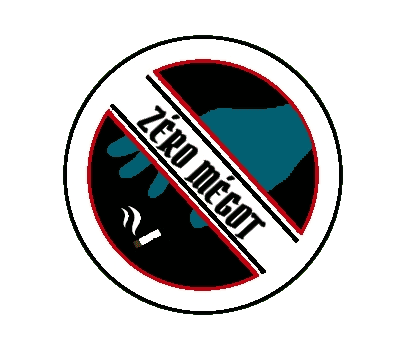
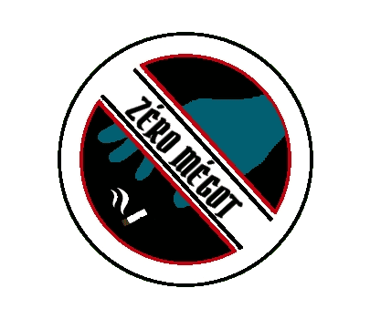

Les Insurgés
des déchets

 



Les Insurgés
des déchets


Prochaine(s) action(s)

Nom opération : WCUD 2023
Objectif : Nettoyer la plage, la ville et la forêt
Lieu rdv : 46 Avenue de la Chaumière, 17390 La Tremblade
Date : 16/09/2023
Heure : 09h30
09h30 : Café d'accueil au Casino Partouche La Tremblade / Ronce les bains. Briefing sur les consignes de sécurité, l’impact des mégots sur l’environnement, les possibilités de recyclage • Distribution du matériel • Indications sur les itinéraires à suivre • Comptabilisation des participants.
● 10h00 : Départ des ramasseurs
● 11h30 : Retour des ramasseurs
Tri et caractérisation des déchets • Remplissage du mégomètre • Récupération du matériel • Photo d’équipe et de la récolte + Débriefing sur notre stand Place Brochard.
● 12h00 : Pot de l’amitié u Casino Partouche La Tremblade / Ronce les bains à l’issue du ramassage et retours d'expérience
Ramasser et trier les déchets : nos précédentes actions collectives
Chaque année, l’équivalent de 8,7 tours Eiffel de déchets serait jeté illégalement dans la nature en France. Ces détritus sont une source de pollution et ils coûtent une fortune aux communes concernées, qui sont dans l’obligation de les traiter. Du sac poubelle à la véritable casse à ciel ouvert, la taille des sites répertoriés par notre association ou indiqués par des riverains est évaluée avant toute intervention en concertation avec les pouvoirs publics afin d’organiser des opérations de nettoyage ciblées.
2022


Objectif : Nettoyer une plage
Lieu : La Tremblade (17390) / Plage du Galon d'Or
Date : 02/01/2022
Effectif : 20
Durée : 5 heures
Bilan : 270 kgs de d√©chets ! Des poteaux en fer - Des pneus avec du ciment - Une palette - Une planche en plastique XXL- Des m√©gots - Des micro plastiques divers (un vrai fl√©au, un travail de fourmi üêú ) üò¢üò¢ü•∫ - Un talon de chaussure - Un cale√ßon - Un collant - Une seringue - Une bouteille de shampoing üߥ - Du Polystyr√®ne dans le sable et les oyats üò§ - Des collecteurs √† hu√Ætres - Des bouts de poches √† hu√Ætres - Des ficelles, cordages‚Ķ - Des bouchons de bouteilles - Un bloc de mousse expansive d‚Äôune 30 taine de kilos üò± - 14 bouteilles en verre - Des sacs de d√©jection canine
Mission accomplie


Objectif : Nettoyer une plage
Lieu : Saint-Froult (17780) / Plage de plaisance
Date : 06/02/2022
Effectif : 27
Durée : 2 heures
Bilan : La plage et ses abords (Parking) ont √©t√© d√©barrass√© de 104 kgs de d√©chets en √† peine 2h ! Une mention sp√©ciale aux enfants charly et Juliette üôèüèªüòç. 94 kgs sur une plage propre : D√©chets de l‚Äôostr√©iculture et m√©tiers de la p√™che / Douilles de chasse / √âcarteurs / Filets / Bidons / Micro plastiques / Palettes / Cordage / Chambre √† air / Bouteilles plastiques / Verre. Cela correspond √† environ 50 jours d'√©chouage de macro-d√©chets. Sur le parking et dans les buissons : 1 sac plastique avec un cadavre de chat ! (No comment‚Ķüò§ü§¨) / 10 Canettes (pour l‚Äôassociation K Net Partage üíñ) / 12 bouteilles en verre. Mille bravos √† vous tous, venus du coin mais aussi d‚ÄôAngoul√™me, de La Rochelle, de Surg√®res‚Ķ Merci pour votre √©nergie, pour cette superbe ambiance !
Mission accomplie


Objectif : Nettoyer le littoral
Lieu : Bourcefranc-Le Chapus (17560) / Marennes (17320)
Date : 20/02/2022
Effectif : 60
Durée : 2 heures
Plus de 200 kgs en √† peine 2h ! Et pourtant sur une plage d‚Äôapparence relativement propre mais jonch√©e de d√©tritus n√©anmoins. Bilan = 1 pneu - De la ferraille - Des d√©chets des m√©tiers de la mer (poches √† hu√Ætres, chambres √† air, collecteurs, ficelles, cordages, filets‚Ķ) - Deux sacs cabas remplis d‚Äô√©carteurs trouv√©s dans la vase. (Merci sabine üò¨) - Divers morceaux de plastique - Une 15 zaine de bouteilles en verre - 50 canettes en m√©tal (r√©colt√©es pour l‚Äôassociation @knetpartage) - des chaussures - une grosse poubelle - des palettes - des gravats - des tuiles - des douilles de chasse - des bidons - des bouteilles plastiques - 1 sac √† main avec les papiers d‚Äôidentit√© de la personne.
Un immense merci √† vous tous, les h√©ros du quotidien, aux enfants √† qui nous avons distribu√© un dipl√¥me et un kit z√©ro d√©chet en remerciement.ü§© Un pochon r√©alis√© par nos petites mains, comportant : Un beewrap (avec les d√©licieux gâteaux de lolo - Un oriculi en h√™tre - Une gourde r√©utilisable. Kit offert par l‚Äôassociation les insurg√©s des d√©chets mais √©galement par la mairie de Bourcefranc le chapus et la mairie de Marennes.
Mission accomplie


Objectif : Nettoyer le littoral
Lieu : La Tremblade (17390) / Plage de l'Embellie
Date : 06/03/2022
Effectif : 50
Durée : 2 heures
142 kgs de d√©chets dont 60 kgs de ferraille ! Parmi les d√©chets r√©colt√©s, nous avons trouv√© : 1 Grille de d√©sensablement - Des tongues - Du polystyr√®ne - 1 Sandale - 1 gant - Des ficelles, des cordages - Des micro plastiques - Des jouets de plage - 15 bouteilles en verre - Des canettes - Des coupelles et poches √† hu√Ætres ü¶™ - Du bois trait√© - Du siporex !- Merci √† tous d‚Äôavoir r√©pondu √† l‚Äôappel, encore une belle ambiance au service de la plan√®te. De belles rencontres autour d‚Äôun verre de l‚Äôamiti√© pour cl√¥turer cette matin√©e. Nous remercions Madame le MAIRE de la Tremblade et sa deuxi√®me adjointe Madame CHAILL√â. Merci √©galement √† Monsieur BERTHELOT (service culture-√©v√®nementiel) et √† Monsieur DUPRAT, responsable d‚Äôunit√© territoriale (ONF).
Mission accomplie


Objectif : Nettoyer les bois
Lieu : Saint-Just-Luzac (17320)
Date : 04/04/2022
Effectif : 20
Durée : 3 heures
600 kilos de d√©chets abandonn√©s, r√©colt√©s, tri√©s et emmen√©s √† la d√©ch√®terie. Dont un cadre de v√©lo enterr√© - un si√®ge m√©dical - 18 pneus dont 1 de tracteur - 3 sacs jaunes de canettes dont 3/4 de bi√®re 8.6 (pour l‚Äôassociation Knetpartage) - 226 bouteilles en verre soit environ 115 kilos - Des sacs de poubelles m√©nag√®res - 1 matelas de transat - 1 cadavre de chien - 1 cadavre de chat - du polystyr√®ne - (300 fous rires, 50 sacs cabas √† nettoyer (merci sabine), 1 gâteau d√©vor√© (merci Lola)). Un √©norme merci √† notre olivier (pas celui de carglass ni celui de notre clip ¬´ Card√©gueulass ¬ªü§™) pour son aide, son gros camion, le verre de l‚Äôamiti√©, sa bonne humeur et surtout de nous supporter !!
Mission accomplie


Objectif : Nettoyer un canal
Lieu : Muron (le Petit Gué Charreau) (17430)
Date : 10/04/2022
Effectif : 5
Durée : 2.5 heures
Encore une belle matin√©e √† d√©polluer un endroit magnifique pr√®s de MURON (Rochefort 17), et de franches rigolades notamment √† cause de l'embarcation plus que fragile ! Bilan : 53 kgs de d√©chets üóë Principalement des poubelles m√©nag√®res ! Emballages alimentaires - 1 t-shirt - 1 manteau - 2 bidons - 6,5 kgs de bouteilles en verre - 21 canettes ! (Dont la majorit√© de Desperados !) - Masques - 1 compteur de voiture üöó Merci √† tous les membres du bureau et √† Wolci pour son accueil et amiti√©.
Mission accomplie


Objectif : Nettoyer le littoral
Lieu : Bourcefranc-Le Chapus (17560)
Date : 01/05/2022
Effectif : 41
Durée : 2 heures
Nous n‚Äôavons pas ch√¥m√© en ce jour f√©ri√© ü§≠. 3 groupes ont √©t√© constitu√©s. 1er site : la pointe de Daire. 2√®me site : les c√¥tes de la baie du Chapus. 3√®me site : les c√¥tes de la baie de la Grognasse. En 2h, 41 personnes ont donn√© toute leur √©nergie, leur bonne humeur pour ramasser et trier 377 kilos de d√©chets dont : 1 pneu - De la ferraille en grosse quantit√© ! (Il en reste) - Des d√©chets des m√©tiers de la mer (forc√©ment‚Ķcar on n‚Äôhabite pas en Ard√®che ü§™) (poches √† hu√Ætres, chambres √† air, collecteurs, ficelles, cordages, filets, ferraille‚Ķ) - Divers morceaux de plastique - 89 bouteilles en verre - 24 conserves ü•´ - 47 canettes en m√©tal dont 20 canettes Amsterdam (√ßa change des redbull et 8-6 ü´£(r√©colt√©es pour l‚Äôassociation @knetpartage) - des chaussures ü•ø üëü - 1 palette - des gravats - des tuiles - 1 peluche üß∏ - de l‚Äôamiante dans l‚Äôeau ! - des bouteilles plastiques - 250 m√©gots üö¨ A l‚Äôissue, nous avons pu √©changer autour d‚Äôun verre de l‚Äôamiti√© sous un beau soleil. Un immense merci üôèüèª √† tous les b√©n√©voles, aux nouveaux et aux fid√®les, aux jeunes de BTS du lyc√©e de la mer, aux enfants Louis et Charlotte. Un immense merci √† l‚Äô√©quipe du bureau qui sont une aide pr√©cieuse.
Mission accomplie


Objectif : Nettoyer le littoral
Lieu : Vergeroux (17300)
Date : 18/05/2022
Effectif : 50
Durée : 2 heures
Sous une chaleur écrasante, dans un cadre magnifique sur les bords de la Charente, aux pieds des carrelets, nous avons unis nos forces et nos compétences pour l’opération « dépollution sur rives » à Vergeroux. Avec la mobilisation et la participation de Monsieur le Maire, Gilles FORT, des élus et de quelques habitants, avec les jeunes de l’association @mediaterrerochefort @uniscite.rochefort , des lycéens de Merleau Ponty, de Surgères et l’association @wingsoftheocean_scylla de passage en Charente Maritime ⛵️ , c’est presque 400 kilos de déchets (ficelles, de plastiques, bois traités …) qui ont été ramassés et triés en 2h ! (Détail complet effectué par @wingsoftheocean_scylla sur la plateforme @remedzeroplastique )
Mission accomplie


Objectif : Nettoyer une ville
Lieu : Marennes (17320)
Date : 21/05/2022
Effectif : 50
Durée : 2 heures
Au total pr√®s de 50 personnes diss√©min√©es aux 4 coins de la ville : du jardin public √† la salle polyvalente en passant par la M√©diath√®que de Marennes. Mention sp√©ciale √† tous les jeunes, toutes et tous tr√®s motiv√©s pour r√©parer les incivilit√©s caus√©es par les adultes. Incivilit√©s dans toute la ville mais aussi au sein de l'enceinte sportive o√π bon nombre de m√©gots ont √©t√© ramass√©s.üö¨ Vous avez d√©barrass√© la ville (et potentiellement la mer) de 12500 m√©gots !! ! üëèüëèüëè Sachant qu'un m√©got pollue 500 litres d'eau, c'est l'√©quivalent d'une piscine olympique de 6 250 000 litres qui ne polluera pas notre environnement ! üåä Ceux-ci seront transmis aux services techniques puis envoy√©s vers un op√©rateur pour √™tre recycl√©s en doudounes ou en isolants. üß• Le bilan complet en 2 heures √† 50 personnes = 33 kilos de d√©chets ramass√©s et tri√©s dont : - 12500 m√©gots (1,8 kilos) üö¨ - 30 bouteilles en verre üçæ - Une chaussure üë° - Un maillot de bain ü©± - 71 canettes pour l'association Laurent K Net Partage - Ferraille - M√©tal - Plastique, carton, ficelles - Poppers au jardin public üòë Encore merci √† US Marennes (Merci Pascale !) pour sa volont√© de f√©d√©rer autour de cette probl√©matique. Vous pouvez √™tre fiers de vos jeunes car nous, les insurg√©s des d√©chets, nous le sommes ! ü§ó
Mission accomplie


Objectif : Ramassage sur la plage et en ville
Lieu : Ronce les bains (17390)
Date : 17/09/2022
Effectif : 60
Durée : 2 heures
Une ambiance de folie ‚ö° en cette belle matin√©e ensoleill√©e. Un accueil 5 ‚≠ê‚≠ê‚≠ê‚≠ê‚≠ê organis√© par le Casino Partouche La Tremblade / Ronce les bains (Merci Mr le Directeur et son √©quipe). Un partenariat efficace avec la mairie de La Tremblade/Ronce les Bains et l'ONF üôè. Merci aux √©lus engag√©s et au service animations ! Place au bilan üìù en 2H de ramassage : - 12 500 m√©gots üö¨ qui ne finiront pas en mer üåä (soit 6 000 000 litres d‚Äôeau qui ne seront pas pollu√©s soit l‚Äô√©quivalent d‚Äôune piscine üèäü誂Äç‚ôÇÔ∏è olympique !!! üò±). Ces m√©gots vont √™tre recycl√©s en mobilier urbain par M√©GO : Ensemble recyclons les m√©gots de cigarettes. - 81 kilos de d√©chets dont - 22 kgs de tout venant (divers plastiques, bois peint, chaussure üëû‚Ķ) - 20 kgs issus des m√©tiers de la mer (poches et collecteurs d‚Äôhu√Ætres, filets, polystyr√®ne‚Ķ) - 10 kgs de bouteilles en verre - 4,4 kgs de ferraille (barbel√©s‚Ķ) - Du bois, des cartons üì¶, des masques üò∑‚Ķ - 20 canettes (transform√©es en don üí∂pour soutenir la superbe association Association K Net Partage et les enfants malades. Et des tonnes de sourires, de soutiens, d‚Äôencouragements de la part des promeneurs, des commer√ßants locaux‚Ķ et √ßa, √ßa n‚Äôa pas de prix ! Encore mille mercis √† tous les b√©n√©voles.
Mission accomplie


Objectif : Nettoyage d'un bois
Lieu : Saint-Just-Luzac (17320)
Date : 22/09/2022
Effectif : 8
Durée : 1.5 heure
Nous avions donc rendez-vous, ce matin avec ce beau soleil, au nord de Saint-Just près des premiers chenaux. Delphine, Raphaël, Sabine, Lola, Viviane, Denis, Marie-Bernard et moi avons probablement découvert une ancienne déchetterie à ciel ouvert (datant des années 60/70). La datation a été possible avec le "design" des contenants en verre, l'épaisseur et le poids des bouteilles en verre, et surtout les contenants plastiques. Ainsi, en un peu plus d'une heure, nous avons récolté 1,5 m3 de déchets divers, pour un poids total de 130 kgs. Soit: 40 kgs de tout venant (dont 2 grandes bâches agricoles) 38 kgs de ferraille (dont une trentaine de ressorts de matelas, 1 grand seau, 1 panneau routier, 6 casseroles et gamelles, 2 plaques de cuisson et de nombreuses boîtes de conserves). 50 kgs de verre (dont 122 bouteilles, flacons et un bidon de 20L rempli de tessons) 42 canettes en aluminium Le tout a été trié (plastique, verre, alu, ferraille et tout venant) et mis à la disposition des services techniques de Saint-Just.
Mission accomplie


Objectif : Nettoyer les bois
Lieu : Saint-Sornin (17600)
Date : 09/10/2022
Effectif : 70
Durée : 1.5 heure
Quelle joie d‚Äôavoir pu accueillir plus de 70 personnes : Le personnel de L'√©cole des explorateurs Montessori-Freinet , leurs superbes √©l√®ves, les familles et amis (parfois venus des deux s√®vres !) , des √©lus de la commune et leurs conjoint(e)s (Madame Laurence Faney et H√©l√®ne Gautier notamment) et tous nos fid√®les b√©n√©voles‚Ķ Une mobilisation exceptionnelle pour la pr√©servation de ce charmant village. Bilan du ramassage üߧ : - 7 pneus soit 60 kgs - 1 ¬´ barri√®re ¬ª de circulation ü§£ü§£ soit 8kgs - 4,3kg de d√©chets recyclables (sacs jaunes) - Verres soit 44,9 kgs - Bois soit 6kgs - Tout venant : 58,4 kgs - Canettes : 47 canettes pour Association K Net Partage - Gravats soit 30kgs - Ferraille soit 12kgs - 253 m√©gots Total : 225 kg de d√©chets ramass√©s et tri√©s en 1h30. Encore mercis √† vous tous üôèüèª pour notre plan√®te üíöüåç
Mission accomplie


Objectif : Nettoyer une plage
Lieu : Les Mathes/La Palmyre (17570) / Baie de Bonne Anse
Date : 29/10/2022
Effectif : 130
Durée : 4 heures
Bilan : La caratérisation des déchets est en cours. Ce que l'on peut évaluer, c'est le volume total des déchets récoltés soit 15 à 20 m³ pour un poids de 800 kilos!
Mission accomplie


Objectif : Nettoyage d'un marais
Lieu : Les Mathes | La Palmyre (17570)
Date : 13/11/2022
Effectif : 8
Durée : 3 heures
Un signalement de d√©p√¥ts sauvages üìû suivi d‚Äôun rep√©rage et hop hop une d√©pollution XXL, au pied lev√© ! Action-r√©action (un grappin et une barque et c‚Äôest parti) ! R√©sultat pharaonique : 8 m3 de d√©chets sauvages (soit environ 1 tonne en moins qui va tra√Æner dans la nature !) dont une bonne partie dans l‚Äôeau ! - 4 matelas - 6 v√©los - 1 trottinette - 4 pneus de voiture - 10 pneus de v√©los - 2 sommiers m√©talliques - 1 canap√© üõãÔ∏è - 3 chaises - 85 bouteilles en verre - 4 assises de canap√© - 10 kilos de jouets (m√™me neufs !)ü§∑ü誂Äç‚ôÄÔ∏èüò° - 7 canettes - 1 huche √† pain - 2 pani√®res √† linge - 23 kgs de V√™tements - 1 enceinte - 11 paires de chaussures - des rollers - 2 chaussures de ski - 1 auvent de tente ‚õ∫Ô∏è - 1 climatisation - des tonnes de bouchons en plastique ! ü§î - des planches de contreplaqu√© - 2 caddies en plastique
Mission accomplie


Objectif : Nettoyer un fossé
Lieu : Marennes Hiers Brouage (17320)
Date : 24/11/2022
Effectif : 5
Durée : 4 heures
Au résultat 3,5 m3 pour 700 kgs de matière. Dont : 1 roue 1 gazinière 1 évier 1 machine à laver (en kit, seul le tambour était apparent sur 1/3) 1 châssis entier de véhicule (genre Méhari?) La plateforme a due être découpée à la scie circulaire 5 sièges de voitures 1 grosse batterie de véhicule Quantité de faisceaux électriques de véhicule 1 glace arrière de véhicule avec son caoutchouc Divers contenants cassés (pots de peinture, bouteilles, boîtes...) Quantité de bâches (entières ou en morceaux) de tissus, vêtements... Quantité de poches et matériel ostréicole. 1 grand sac plastique avec un numéro de téléphone à 6 chiffres (donc avant 1985)
Mission accomplie

Objectif : Nettoyer le littoral
Lieu : Bourcefranc-Le Chapus (17560) / Marennes (17320)
Date : 27/11/2022
Effectif : 80
Durée : 2 heures
Le bilan complet en un peu moins de 2 heures √† 80 personnes (dont 20 enfants) : - Pr√®s de 900 kgs dont : - 1 wc - 2 v√©los - 1000 M√©gots - 24 Masques - 55 collecteurs d'hu√Ætres - Plus de 200 coupelles ostr√©icoles - Poches ostr√©icoles - 1 sac de canettes pour Association K Net Partage - Micro plastiques dans la laisse de mer - Bois - 84 bouteilles en verre - 1 antenne TV - 1 bocal de "mojhettes piates‚Äù - Jeux de plage pour enfants - 1 emballage de pr√©servatif - 1 maillot de bain - 1 poubelle üôÑ - Ferraille - M√©tal - Poteaux en b√©ton - Plastique, carton, ficelles
Mission accomplie

Objectif : Nettoyer les marais et un dépotoir
Lieu : Arvert (17530)
Date : 04/12/2022
Effectif : 35
Durée : 3 heures
Le bilan condensé (détails en commentaires tant il est imposant) en 3 heures à 35 personnes : 14 m3 (14000L) de déchets récoltés et triés pour pratiquement 2 Tonnes dont notamment : -1628 bouteilles en verre -382 cannettes en alu pour Association K Net Partage -9 pneus -30 kgs de ferraille -12 big bags de tout venant -1 aspirateur -1 gros bidon de 50 L -1 scie circulaire électrique -1 coussin péteur (avec odeur d’origine) -1 brosse à dents -1 scooter -1 sommier -1 matelas -2 appuie-tête auto -1 poubelle cassée de 100 L -3 bâches -1 manne ostréicole -De la vaisselle et des couverts -1 gros tuyau -2 bidons de 20 L -2 petites batteries de motos -1 canapé -1 barbecue (1/2 tonneau) -10 m de grillage emmêlé dans les ronces -3 roues de vélo -6 cannes à pêche -Ferraille -1 siège auto pour enfant -1 pot de chambre enfant -3 appareils « training » pour enfant -1 four micro-ondes -1 enjoliveur de voiture -Divers contenant plastiques, jouets d’enfants, CD, livres, jeux Nintendo DS…Etc
Mission accomplie


2021


 

 

Objectif : Nettoyer une décharge sauvage
Lieu : Saint-Just-Luzac (17320) / Abords de la D18
Date : 01/03/2021
Effectif : 13
Durée : 3 heures
Bilan : 20m2 d'une déchetterie sauvage dont 1 tonne et demi de déchets (gravats, bâches plastiques bidons de peinture, solvants, seaux...), 200 kg de bouteilles en verre, 170 canettes, des bouteilles en plastique par dizaines, 20 pneus, 2 transats, 1 tv, 1 amphore géante, 1 ordinateur, 1 chaîne hi-fi avec les enceintes svp ! Des peluches ! Des vêtements, de la nourriture, 1 faisan mort et emballé ! 1 oiseau et 1 crâne de ragondin
Mission accomplie


Objectif : Nettoyer une zone de marais
Lieu : Marennes (17320) / Badauge
Date : 22/03/2021
Effectif : 16
Durée : 6.5 heures
Bilan : 5 m3 de d√©chets => 2 pneus, 4 vieilles tables d‚Äôostr√©iculteurs (ferraille), 1 fauteuil, 1 transat, 2 animaux morts dans des sacs ü•∫ü§¢üò±, √©norm√©ment de micro-d√©chets en plastique, du polystyr√®ne, des coupelles d‚Äôostr√©iculture et poches, des bouchons, des pailles, ficelles, fils en plastique...
Mission accomplie


Objectif : Nettoyer une zone côtière
Lieu : Plage et forêt du phare de la Coubre
Date : 28/03/2021
Effectif : 10
Durée : 4 heures
Bilan : 11 sacs de 50 litres et un pneu, énormément de petits plastiques éparpillés sur une grande surface avec une quarantaine de bouteilles, beaucoup de verre dans la forêt et dans le blockhaus, environ une trentaine de bouteilles.
Mission accomplie


Objectif : Nettoyer les bois et les cours d'eau
Lieu : Saint-Just-Luzac (17320) / Abords de la D728
Date : 04/04/2021
Effectif : 14
Durée : 6 heures
Bilan : 7m3 de déchets récoltés, 1 remorque pleine de déchets, 1000 clous, 31 pneus, 45 canettes, 185 boites de conserves, 1 Tv, des vêtements, 300 kgs de bouteilles en verre, du grillage, 1 friteuse, des sacs d’aliments, un bateau gonflable, des poches à huîtres, des plaques d'amiante, de goudrons, des ruches etc etc etc...
Mission accomplie


Objectif : Nettoyer un ruisseau encombré de déchets
Lieu : Bourcefranc-Le Chapus (17560) / Cagouillac
Date : 07/04/2021
Effectif : 22
Durée : 6 heures
Bilan : 4 m3 de déchets divers plastiques - 2 pneus - 200 bouteilles en verre - 100 cartouches de chasse - 30 canettes en fer déjà désagrégées ! - 1 friteuse - 1 meuble - 1 plaque en tôle - 4 sacs de poubelle ménagère - 1 paire de bottes - 1 soutien gorge - Un pantalon(Mais personne dedans, ouf ! )
Mission accomplie


Objectif : Ramassage sur un site ostréicole
Lieu : Bourcefranc-Le Chapus (17560)
Date : 14/04/2021
Effectif : 5
Durée : 5 heures
Bilan : 522 bouteilles de verres (sans compter celles casseÃÅes), des canettes (2 sacs jaunes), 1 si√®ge de camion d'un autre temps, 1 craÃÇne de chat üêà üò±, 1 bidon avec de l'huile de vidange usageÃÅe ‚ò†Ô∏è, de la ferraille, etc etc...
Mission accomplie


Objectif : Nettoyer une décharge sauvage dans un marais
Lieu : Bourcefranc-Le Chapus (17560) / Rue de Chatain
Date : 25/04/2021
Effectif : 24
Durée : 8 heures
Bilan : 4 tonnes de déchets - 12 m3 - Carrelage - Gravats - Tuiles - Plaque d'Amiante - Blocs Siporex - Parpaings - Ferraille - 1 portail - 1 énorme grillage - 1 brise vue - 20 canettes - 10 bouteilles en verre - 10 Bidons (huile et produits dangereux ont été déversés !) - 3 fusées de détresse - 80 Chambres à air - 1 arbre de Noel avec ses boules ! - 1 assise de chaise - 1 sac à dos - Des bottes - Des pots de fleurs en plastique et en terre cuite - 1 manteau - 1 bidet - 1 robinet - 1 évier - 1 flexible d’aspirateur - 1 pédale de machine à coudre - 2 lustres - 1 perceuse - 1 parabole - 1 pot d’échappement - De la Vaisselle - 3 casseroles - 5 Batteries de voiture - Des nappes en plastique - Des bâches en plastique - Des couches culottes - Des poubelles ménagères - 50 poches à huîtres - 25 canettes en plastique - 20 paniers en ferraille - 1 jarretière !
Mission accomplie


Objectif : Nettoyer les bois et les cours d'eau
Lieu : Hiers Marennes/Nodes
Date : 03/05/2021
Effectif : 12
Durée : 7 heures
Bilan : 800 kilos de d√©chets dont 150 bouteilles en verre, 50 canettes, 150 kgs de tout venant, 4 bouteilles plastique remplies d‚Äôurine ü§©, du carrelage, 1 t√©l√©phone fixe, 1 enjoliveur, des chaussures de b√©b√© üë∂üèª (vides üòâ), 1 cuissarde mono jambiste, 1 manteau, 1 emballage de suppositoires, 1 emballage de pr√©servatifs, 1 Canap√©, 2 transats, 1 reste de parasol, 1 tancarville, 1 tapis, des nappes, de la moquette, 1 trottinette, 1 poussette, des canisses, 1 si√®ge auto, de la pâte √† modeler, 1 ¬´ d√©brou ¬ª puis 1 ¬´ ssailleuse ¬ª(car en 2 morceaux ü§™), 1 tente ‚õ∫Ô∏è, des bâches, des sacs poubelles d‚Äôordures m√©nag√®res, de la ferraille, des jouets en plastique (brouette, cuisine), des cartouches de chasse, 1 Ballon de basket, 1 dinosaure ü¶ï (en plastique !)
Mission accomplie


Objectif : Rendre une ville plus propre et sensibiliser
Lieu : Bourcefranc-le-Chapus (centre ville, plage, pistes cyclables)
Date : 05/06/2021
Effectif : 24
Durée : 4 heures
Bilan : environ 500 kilos - 1513 mégots (soit 756 500 litres d’eau qui ne seront pas pollués !) - 47 masques - 105 bouteilles en verre - 61 bouteilles en plastique - 133 canettes (pour l’association caritative K Net Partage ) - 1 sac de 100 litres de polystyrène - 1 pneu - 400 kilos de tout venant - 2 tuyaux en PVC- 1 bidon de 20 litres de térébenthine - 1 panneau rigolo - 2 poêles - 1 mandoline neuve de cuisine - 1 assiette - 1 couteau !
Mission accomplie


Objectif : Nettoyer un site ostréicole
Lieu : Bourcefranc-le-Chapus (site de Daire)
Date : 04/07/2021
Effectif : 25
Durée : 5 heures
Bilan : 209 bouteilles de verre - 60 bouteilles plastiques - 4 m3 de tout venant - 80 canettes en fer pour l‚Äôassociation @knetpartage - 1 gros bidon en plastique avec une bonne odeur ü§™ - 6 Pneus - 10 masques - 1 si√®ge de bureau - 1 trottinette enfant - 1 v√©lo adulte (apparemment jet√© la veille dans une claire parce que c‚Äôest rigolo !üôÑü§î) - 1 antenne tv - Des poches √† hu√Ætre enterr√©es - 5 paniers en plastique - Des chambres √† air - 10 kg de Ferraille. Tout a √©t√© √©videmment tri√©, rang√©‚Ķ sous les averses de pluie üåß et nous avons vaincu les √©l√©ments !
Mission accomplie

Objectif : Nettoyer les pistes cyclables
Lieu : Marennes
Date : 06/09/2021
Effectif : 3
Durée : 3 heures
Bilan sous un soleil de plomb : un gros sac rempli de 12 masques, des papiers, des mouchoirs pipi caca üí©, des canettes broy√©es par le fauchage des bas c√¥t√©s, du polyester, des m√©gots jet√©s depuis la route et beaucoup de cyclotouristes sensibilis√©s. Fatigu√©s, les insurg√©s des d√©chets sont dess√©ch√©s üòÇüòÇü§™ü§™ü§™ü§™ mais contents !
Mission accomplie


Objectif : Nettoyer un ruisseau encombré de déchets
Lieu : Marennes
Date : 13/09/2021
Effectif : 5
Durée : 3 heures
Bilan : 100 litres de d√©chets divers (M√©gots, 30 masques, 50 canettes d‚Äôalcool, 20 bouteilles en verre, 1 cagette en plastique, 1 tampax usag√© üôÑü§¢, des sacs macdo ‚Ķdans les marais et aussi sur la route car les gens jettent de leurs fen√™tres en conduisant !
Mission accomplie


Objectif : (Re)Nettoyer un ruisseau encombré de déchets
Lieu : Bourcefranc-Le Chapus (17560) / Cagouillac
Date : 16/09/2021
Effectif : 9
Durée : 3 heures
Bilan : 143 bouteilles en verre - une soixantaine de canettes - de le ferraille - un grillage -1 enceinte (JVC) - 2 big bag remplis de d√©chets divers - 1 pile - une quarantaine de sacs de "caca de chiens" qui servaient de guirlandes √† des arbres üòñüòñ - un big bag d√©chiquet√©.
Mission accomplie


Objectif : Nettoyer les bois et routes pour le World Clean Up Day
Lieu : Nodes / Bourcefranc-Le Chapus / Marennes
Date : 18/09/2021
Effectif : 21
Durée : 3 heures
Bilan : Plus d‚Äôune demie-tonne de d√©chets ramass√©s et tri√©s pour faciliter le travail des agents et participer au recyclage ‚ôªÔ∏è. Nos trouvailles : 1 Cd de johnny Hallyday ü§™ - 1 K7 vhs point break - 10 pneus - 1 gros pneu de tracteur - 800 litres de tout venant- 300 litres de verre (bouteilles de bi√®re, vin‚Ķ) - 10kg de ferraille - 1 t√¥le ondul√©e - 1 canard en plastique - 1 f√®ve - 1 pipe √† crack, artisanale üò≥ - 1 sac de jouets d'enfants üò° - 1 coq mort dans un sac en plastique ü§¢! - 1 sac de terreau plein ! - 6 gros bidons - 2 bacs de polystyr√®ne - 1 bidon de po√™le √† p√©trole - 1 batterie de cuisine - 2 Bacs en plastique de frigo - 400 litres de canettes en m√©tal (collecte en faveur de l‚Äôassociation knetpartage pour les enfants malades) - 30 masques - M√©gots ! - 1 arbre √† chat üêà‚Ä炨õ (sans le chat heureusement ü§™).
Mission accomplie


Objectif : Nettoyer les plages
Lieu : Bourcefranc-Le Chapus / Marennes
Date : 10/10/2021
Effectif : 60
Durée : 2.5 heures
Bilan : + de 800 kgs de d√©chets de tout venant + 150 litres de canettes en m√©tal (pour l‚Äôassociation Knetpartage) + 30 kgs de bouteilles en verre. Types de d√©chets : Masques - M√©gots - Canettes en m√©tal - Bouteilles en verre - Poches et coupelles d‚Äôostr√©iculture - Des couches Casiers en plastique Ficelles Polystyr√®ne 1 cafeti√®re 2 pots de peinture ü§¨ü§¨ 1 botte 1 tapis - 1 chaussure de ville - 1 tong ü©¥ - Du carrelage √† foison ! (Visiblement quelqu‚Äôun qui change sa d√©co et qui ne sait pas que la d√©ch√®terie existe ! Et qui pr√©f√®re jeter pr√®s de la mer sous le pont de la seudre !) ü§¨ü§¨ Des bouts de sanitaire üöΩ MILLE MERCIS √Ä TOUS üíöüåçüßπüôèüèªüߧ Soyez fiers de vous üëèüèª .
Mission accomplie


Objectif : Nettoyer les bois
Lieu : Saint-Just-Luzac
Date : 18/10/2021
Effectif : 23
Durée : 6 heures (5h de ramassage/tri et déchèterie 1h)
Bilan apocaplyptique :
1 tonne 700 de d√©chets üóë (soit deux camions et deux remorques üò≥ü§ó) dont 58 pneus - 2 pneus de tracteur üöú - 583 bouteilles en verre soit 200 kgs de verre - Des bouteilles d‚Äôurine ü§¢ - 83 canettes (qu‚Äôon recycle pour l‚Äôassociation Laurent K Net Partage) - 1 ventilateur - 1 pare-choc avec la plaque d‚Äôimmatriculation üôèüèªü§©üëÆüèº - 2 si√®ges de voiture - 1 rehausseur de chaise pour b√©b√© - 2 √©tendoirs √† linge (tancarville) - 6 portes fen√™tres ü™ü - 20 m2 de lino - 2 enceintes hi-fi - 1 rallonge √©lectrique ‚ö°Ô∏è - 1 auvent de caravane - Des gravats - Des plaques d‚Äôamiante ‚ò†Ô∏è - Des bidons de solvants ‚ò†Ô∏è - 1 matelas - 1 disquette - 4 protections emballages de jeux vid√©os (vol) - 1 grillage - Des emballages mac do - Des poubelles m√©nag√®res - Des hu√Ætres dans un sac plastique - Des m√©gots - Des masques - 1 parapluie BARBIE
Mission accomplie


Objectif : Nettoyer les bois
Lieu : Nieulle-sur-Seudre - Bois de « bien assis » + Bois de Toucheronde + Chenal de Pélard sur la commune de St Sornin + Le pailler au bout de la rue de la corderie + La venelle city stade
Date : 03/11/2021
Effectif : 50
Durée : 6 heures
Bilan 5 tonnes de d√©chets üò±ü§© (notre triste record) dont deux tonnes de pneus ! 50 kgs de bouteilles en verre - 532 canettes (Pour l‚Äôassociation Laurent K Net Partage) - Des si√®ges de voiture - Une valise -Des matelas - 2 wc üöΩ - Un aspirateur - Une tron√ßonneuse - Un amortisseur de voiture - Une batterie - Des m√©dicaments üíä - Un blouson üß• - Un plat √† terrine -Du cirage - Un sommier avec des ressorts en m√©tal - De la laine de roche - Des plaques d‚Äôamiante (non touch√©es ‚ò†Ô∏è) - 8 Chaises et fauteuils de jardin - 20 m√®tres carr√©s de bâches - 15 casiers en plastique - 1 phare de voiture - 1 micro onde - Du bois contreplaqu√© - Des casseroles et assiettes- Des gobelets - 5 masques - Une pelle √† chemin√©e - De la ferraille.
Un énorme merci à la commune de Nieulle sur seudre, à Monsieur le Maire, aux adjoints, à nos contacts Emmanuelle, Maguy et Gégé, aux instituteurs et au personnel de l’école, à l’association de la chasse, aux super nounoux, à tous les bénévoles, aux agents communaux, à « raf sur Seine » et à son père Alexandre qui sont venus nous aider avant de repartir sur Paris (dépolluer la Seine !)
Mission accomplie


Objectif : Ramasser les mégots
Lieu : Marennes (17320) - 4 parcours
Date : 08/12/2021
Effectif : 35
Durée : 2 heures
Collecte de 7 000 m√©gots soit 3 500 000 litres d‚Äôeau sauv√©s, c‚Äôest-√†-dire 100 000 litres d‚Äôeau par personne. Un √©norme bravo √† tous ! üôèüèªü§© Ces m√©gots seront r√©cup√©r√©s et recycl√©s par l‚Äôentreprise ¬´ Eco m√©got ¬ª qui les transforme en mobilier urbain par exemple. Grâce √† l‚Äôachat des cendriers de poche par la municipalit√©, nous avons pu sensibiliser les habitants √† la pollution engendr√©e par ce fl√©au. Merci aux √©lus, Monsieur Leblanc Nicolas et Monsieur Gendre Philippe, d‚Äôavoir cr√©√© ¬´ la cellule environnement ¬ª pour avancer plus efficacement avec nous. Merci pour leur soutien humain et logistique. Merci √† Madame le Maire, √† G√©raldine du service communication de Marennes, aux √©lus Francoise Lucas, √† Marie Bernard, aux b√©n√©voles actifs et courageux, aux lyc√©ens de Merleau Ponty de Rochefort (ilona et Olimpia ü§©), aux actifs, aux fid√®les et aux nouveaux (bienvenue √† vous), aux journalistes Monsieur Raybaud et √† Lucie de Vogue Radio, merci √† la boulangerie ¬´ La Talmi√®re ¬ª pour leurs d√©lices, merci √† Annie, √† Agn√®s de l‚Äôoffice du tourisme ‚Ķ
Mission accomplie

Agir au quotidien de manière individuelle
Notre association prône le ramassage de déchets comme une action de groupe collective, conviviale et partagée.
Mais chacun de nous oeuvre au quotidien pour tenter de réduire l'impact sur la planète que peut engendrer la négligence de certains.
C’est une « activité » addictive comme pour un sportif qui a besoin d’aller à la salle de sport régulièrement.
Que vous ramassiez un masque sur le chemin de l’école de vos enfants, un mégot au pied de votre immeuble ou un ticket de caisse devant le centre commercial, chaque action est importante et chaque geste compte...
L'art du Clean Walk
Une clean-walk, comme son nom l’indique en anglais, est une marche de nettoyage. Le but de cette action est de ramasser les déchets laissés par nos concitoyen(nes). Il suffit d'une paire de gants en latex (ou de jardinage, pour ne pas avoir à les jeter après), de sacs poubelles, de préférence de tri. Si vous en avez la capacité, vous pouvez aussi prendre des pinces de collecte des déchets. Chaque geste compte !
Niveau de difficulté


Crédits photos : Delphine Basset